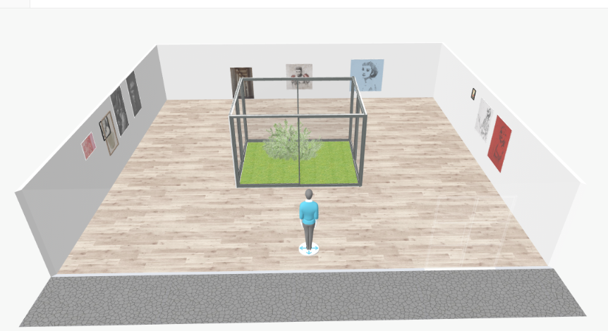

En estas imagenes van a poder observar como son las instalaciones de nuestro museo, el cual consiste de una sola planta con una puerta de vidrio doble, la cual a penas se abre nos deja ver el primer pasillo de nuestro museo, el cual corresponde con la zona numero 1, la primera que se va a recorrer junto con los guias que esta conformada por el la decada del 2000s, luego daremos un pequeño giro de aproximadamente 10 pasos hacia la izquierda donde llegaremos a la zona numero 2, que nos lleva a la decada de los 90s mientras tambien mientras recorremos podemos ver un pequeño jardin ubicado en el centro del museo, el cual tiene puertas de vidrio y deja ver un arbol ubicado dentro de este, esta area esta disponible para todos en cualquier momento del recorrido. Luego de terminar el recorrido por la zona 2, giramos a nuestra izquierda con aproximadamente 10 pasos para empezar el pasillo que emprende la zona numero 3 que seria de la decada de los 80s, seguimos caminando hacia adelante dando con la puerta de salida donde el recorrido guiado termina, son invitados a seguir recorriendo de manera libre.
